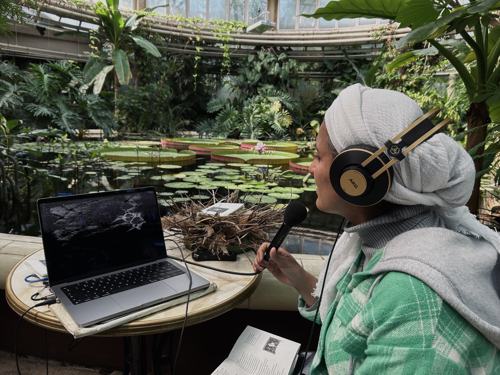

audiovisual interaction installation
‹Sound Funeral› is a sound event/installation born out for the European Turtle Dove, a species on the verge of extinction.
At this sound rite, participants are invited to read the mourning poem for the turtle dove. All voices become energy and comfort, carrying the weight of aspiration and loss. Words, images, human voices and urban soundscape interweave and resonate.
In this interactive media installation, the mourners can hear the soundscape of what might be heard when the turtledoves migrate. Human voice changes the texture of the images, and also evokes the sound of turtledoves through the act of reading the poem, as if they were having a conversation.
mourning poem
You are fragile,
Unable to bear the weight
Of a collared dove,
Of a sudden gust of wind,
Of an electric tower,
Of a hunter’s rifle.
Celebratory fireworks
Burst through your sweet dreams,
When you court,
Like a shameless artist,
There’s no place to nest.
The plants you love to eat,
Are vanishing,
The predator who eats you,
Is another endangered species.
You soar to great heights,
Godlike,
Look for a heaven in the window,
The glass, like an ice knife,
Murders God.
You are ignorant,
You don’t know what migration is,
What is the price of migration.
You don’t know what climate is,
What climate change means.
You don’t know what experiment is,
And that they experiment on you.
You don’t know what symbol is,
Yet you are a symbol of yourself.
You don’t know what freedom is,
And yet you embody freedom.
You’ve acrossed many paths,
Nodding your head a thousand times,
Yet the world remains a blurry haze,
The moment when you die,
Fear gripping your soul,
Eyes widened in terror,
Heart pounding with rapid beats.
People caught a glimpse of your gaze,
You closed your eyes.
You eat the seeds of nature,
Blossom rational flowers,
You are filled with meaning again,
Your merit fulfilled.
Those who read this far,
Will likely remember you,
Only to forget you again,
No surprises at all.
Now you can rest,
Return to your delightful dream.

people were invited to read the mourning poem many thanks to Julia, Abeer Alkibsi, Charles